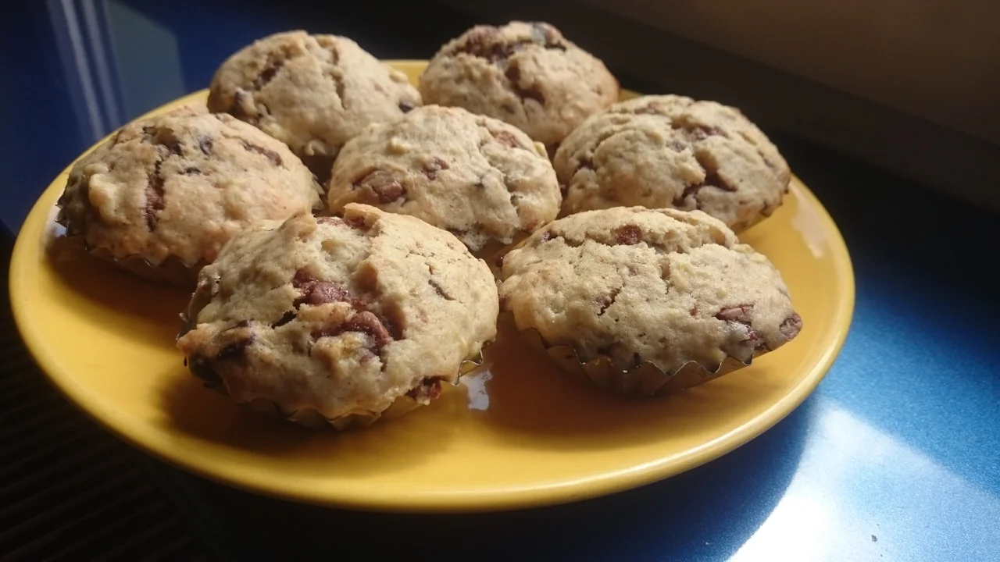

Banana Muffins with Chocolate

- ⏲️ Prep time: 15 min
- 🍳 Cook time: 30 min
Ingredients
- 3 bananas
- 100 g / ½ cups butter
- 150 g / ¾ cups sugar
- 2 eggs
- 1½ tsp. cooking powder
- 260 g / 2⅛ cups wheat flour
- 50 g / 1¾ oz dark chocolate
- 50 g / 1¾ oz milk chocolate
- some vanilla sugar (optional)
Directions
- Peel the bananas and mush them together.
- Whip the two eggs and mix them with the sugar.
- Melt the butter, cut the chocolate into smaller pieces, and whip the eggs.
- Pour the butter into the bananas, then add the flour, then the cooking powder, the chocolate, the whipped eggs and sugar, and the optional vanilla sugar; stirring it all the time.
- Pour the mass into your muffin dish.
- Heat up the oven to 160 °C / 320 °F and bake the muffins for around 20-30 minutes at 170 °C / 340 °F.